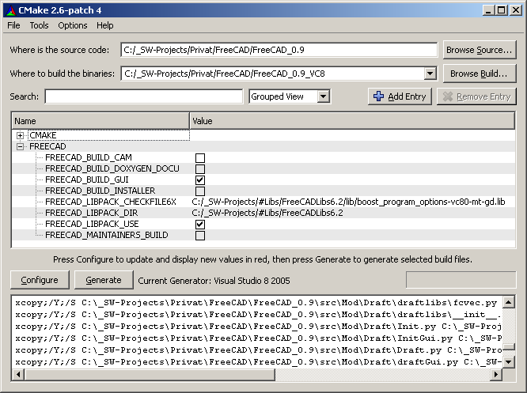

この記事では、Windows上でFreeCADをコンパイルする方法を順番にで説明しています。
必要なのは、主にコンパイラです。Windows上で我々は最新のサービスパックを適用したMS VisualStudio 8コンパイラ（またはVC++ Express）を使用しています。CygwinやMinGWのgccを使用するのはたぶん可能ですが、今までのところ試されたり移植されたりしていません。我々はVC8 Express Editionを使用するように移植しました。あなたは例えばWindows.hを得るために、Windows Platform SDKをダウンロードする必要があります。また、あなたは正常にFreeCADをコンパイルするために、すべてのサードパーティ製のライブラリが必要です。
あなたがMSのコンパイラーを使用する場合、Windows上でFreeCADを構築するために必要なすべてのLIBSを提供するFreeCAD LibPackをダウンロードするでしょう。
その他の前提条件は、（および有用なプログラム）は以下のとおりです。:
システムパスに、以下のプログラムへのパスを加えることも必要です。:
まず、 cMakeをダウンロードしてビルドマシンにインストールします。
バージョン0.9から、様々なコンパイラのためのbuild/makeファイルを生成するのに cMakeを利用します。我々は、.vcproj ファイルをもう提供しません。もし、以前のバージョンのFreeCAD(バージョン0.8以前)をビルドしたい場合、この記事の後ろにある"以前のバージョンのビルド"を参照して下さい。
我々は30を超えるビルド対象や様々なコンパイラへの対応のためのプロジェクトファイルを維持するのが苦痛になってきたので切り替えました。cMakeを使うことで、我々はまだ主として使うコンパイラはMS VC9 Expressですが、Code::Blocks、Qt CreaterやEclipse CDT等の代替IDEを使用できる可能性がでてきました。 将来的には商標権のあるコンパイラソフトウェアを利用せずに、Windows上でビルドすることを計画しています。
CMakeのでFreeCADを構築するための最初のステップは、環境を構成することです。これには基本的に以下の２つの方法があります。:
前者の方法では、あなたはLibPackのパスをcMakeで設定するだけでよく、残りの部分は自動的に実行され、以下のような画面が表示されます。: 
LibPackのパスが 変数 FREECAD_LIBPACK_DIR に設定されていることを確認してください。すべてのincludeとパスが設定されいることから始めます。あなたはただ Generate ボタンを押す必要があり、プロジェクトファイルが生成されます。
もし FREECAD_LIBPACK_USE オプションをoffにした場合、設定はあなたのシステム内から全ての必要なライブラリを探します。多かれ少なかれ、うまくいくかどうかはライブラリに依存します。そのため、幾つかのパスは手動で定義する必要がしばしばあります。cMakeは、見つからないものや、指定すべきものをあなたに指摘します。
cmakeのビルドシステムは、ビルドプロセス上で多くの柔軟性を私たちに提供します。 これは、我々はいくつかの機能またはモジュールをオフに切り替えることができるということです。これはLinuxのカーネルビルドに似ています。ビルドプロセスを決定するために、多くのスイッチがあります。
以下はスイッチの説明です。我々はビルドの柔軟性をより向上させたいので、これらは将来的には大きく変更する可能性が高いです。
| 変数名 | 説明 | 標準値 |
|---|---|---|
| FREECAD_LIBPACK_USE | FreeCAD LibPack の使用の切替え | Win32 では on, それ以外では off |
| FREECAD_LIBPACK_DIR | LibPack のディレクトリ | FreeCAD SOURCE dir |
| FREECAD_BUILD_GUI | GUI関連のモジュール全てのビルド | ON |
| FREECAD_BUILD_CAM | CAM モジュールのビルド 実験的! | OFF |
| FREECAD_BUILD_INSTALLER | Windowsインストーラ用のプロジェクトファイルの作成 | OFF |
| FREECAD_BUILD_DOXYGEN_DOCU | ソースコードドキュメントのプロジェクトファイル作成 | OFF |
| FREECAD_MAINTAINERS_BUILD | リリースビルドするときだけにonにする必要あり | OFF |
まずCMakeのGUIを起動し、ソースフォルダを選択しインストール先のフォルダを追加し、 "設定"をクリックしてください。CMakeはジェネレータを選択するように求められます - FreeCADのお勧めは "Visual Studio 9 2008"です。
"次へ"ボタンをクリックした後、LibPackを見つけることができないため、CMakeはエラーを出力します。 "FREECAD_LIBPACK_DIR"変数にどこにLibpackフォルダがあるかを手動で選択する必要があります。その後、もう一度 "設定"をクリックする必要があります。configureが行われた後、 "Generate"をクリックしてください。cMakeの作業を終了後、それを閉じることができます。
Visual Studioを使用する前に、我々は（最初に構築する際に、一度だけこれを行う必要がある）システムパスにlibpackを追加する必要があります。あなたは "Panel>>System>>Advanced System Settings"をたどる必要があります。"System properties"ダイアログで、 "Advanced"タブの下に"Environment Variables"ボタンがあります。それをクリックしてください。それをクリックした後、パスにlibpackを追加します。他のパス変数とは";"で区別します。
次にVisual Studio 2008 を起動する必要があります。Visual C++ Express2008でも同様に動作します。ビルドの前に、binフォルダを libpack¥bin フォルダから、(cMakeで生成された)binフォルダにコピーするのは良い手順です。
この後、"File >> Open >> Project/Solution"をたどってください。cMakeのビルドで生成されたファイルから、FreeCAD_Trunk.slnを開く必要があります。それを開いたら、ツールバーにある3つのポップアップメニューがあるでしょう。それらの一つは"Debug"になっています。これを"Release"に切り替えます。"Build >> Build Solution"を実行します (もしくは F7キーを押します) 。このプロセスにはかなりの時間がかかります。
それが終了したら、"Debug >> Start without Debugging"を実行します。ポップアップウィンドウに、exeファイルを選択するように求められます。 "Executable File Name" の下にあるポップアップメニューをクリックし、"Browse"を選択します。ソースファイルがあるbinフォルダに移動し、FreeCAD.exeを選択します。
作業完了です!
ここではコマンドラインからFreeCADを構築する例を示します。:
rem @echo off rem Build script, uses vcbuild to completetly build FreeCAD rem update trunc d: cd "D:\_Projekte\FreeCAD\FreeCAD_0.9" "C:\Program Files (x86)\Subversion\bin\svn.exe" update rem set the aprobiated Variables here or outside in the system set PATH=C:\WINDOWS\system32;C:\WINDOWS;C:\WINDOWS\System32\Wbem set INCLUDE= set LIB= rem Register VS Build programms call "C:\Program Files (x86)\Microsoft Visual Studio 9.0\VC\vcvarsall.bat" rem Set Standard include paths set INCLUDE=%INCLUDE%;%FrameworkSDKDir%\include set INCLUDE=%INCLUDE%;C:\Program Files\Microsoft SDKs\Windows\v6.0A\Include rem Set lib Pathes set LIB=%LIB%;C:\Program Files\Microsoft SDKs\Windows\v6.0A\Lib set LIB=%LIB%;%PROGRAMFILES%\Microsoft Visual Studio\VC98\Lib rem Start the Visuall Studio build process "C:\Program Files (x86)\Microsoft Visual Studio 9.0\VC\vcpackages\vcbuild.exe" "D:\_Projekte\FreeCAD FreeCAD_0.9_build\FreeCAD_trunk.sln" /useenv
FreeCADのコンパイルを簡単にするために、我々はすべての必要なライブラリのコレクションを提供しています。それは、LibPackと呼ばれています。あなたはそれをSourceForgeの ダウンロードページ で見つけることができます。
あなたは、以下の環境変数を設定する必要があります。:
％FREECADLIB％\ bin"および"％FREECADLIB％\ dll"の場所を、システムPATH変数に追加します。Windowsは再帰的に環境変数を置き換えないので、"％FREECADLIB％"をパス名で付け替える必要があることに留意してください。
Visual Studioの幾つかのサーチパスをセットする必要があります。 これらを変更するには、Tools→Options→Directory とメニューをたどります。
以下のサーチパスをincludeパスのサーチリストに追加します。
以下のサーチパスをlibパスのサーチリストに追加します。
以下のサーチパスをexecutableパスのサーチリストに追加します。
コンパイル時にいくつかのPythonスクリプトが実行されます。そのため、PythonインタプリタはOS上で動作しなければいけません。それを確認するには、コマンドボックスを使用します。Pythonのライブラリが正しくインストールされていない場合は、"python.exeを見つけることができません"といったエラーメッセージが表示されます。あなたはLibPackを使用する場合もbinディレクトリでpython.exeを使用することができます。
VC6とVC8ではバージョンが異なるため、VC8でプロジェクトをビルドする場合、WildMagicライブラリのリンク情報を変更する必要があります。両方のバージョンは"LIBPACK/DLL"で提供されています。AppMeshのプロジェクトのプロパティで、wm.dllのライブラリ名をVC8バージョンに変更します。DebugとReleaseの構成で、それを変えることを忘れないでください。
すべての前提条件に適合させたあとは、コンパイルはVC内でマウスクリックするだけでできると思います。
すべての前提条件に適合した後、コンパイルは - うまくいけば - VCではでマウスクリックのみで実行できます。:
バージョン2.5よりも古いPythonを使用したLibPackを使っている場合、さらに2つのファイルをコピーする必要があります。:
Pythonエラーで実行できない場合は、zlib*.pyd ファイルの一つが不足しています。
ソースコードのドキュメントを構築する場合は、 DoxyGenが必要です。
インストーラパッケージを作成するには WIXが必要です。
コンパイル時にいくつかのPythonスクリプトが実行されます。そのため、Pythonインタプリタが適切に動作する必要があります。
詳細は ソース内の"README.Linux"にも記載があります。
まずはじめに、Qt Designer用のFreeCADのすべてのカスタムヴィジェットを提供するQtプラグインを構築すべきです。ソースファイルは以下にあります。
//src/Tools/plugins/widget//.
これまでのところ我々は、makefileを提供していません。しかし、以下を実行すると、
qmake plugin.pro
makefileが作成されます。これを実行後、makeを実行するとライブラリが作成されます。
//libFreeCAD_widgets.so//.
このライブラリをQt Designerに認識させるために、以下の場所にファイルをコピーする必要があります。
//$QTDIR/plugin/designer//.
{kind=link}